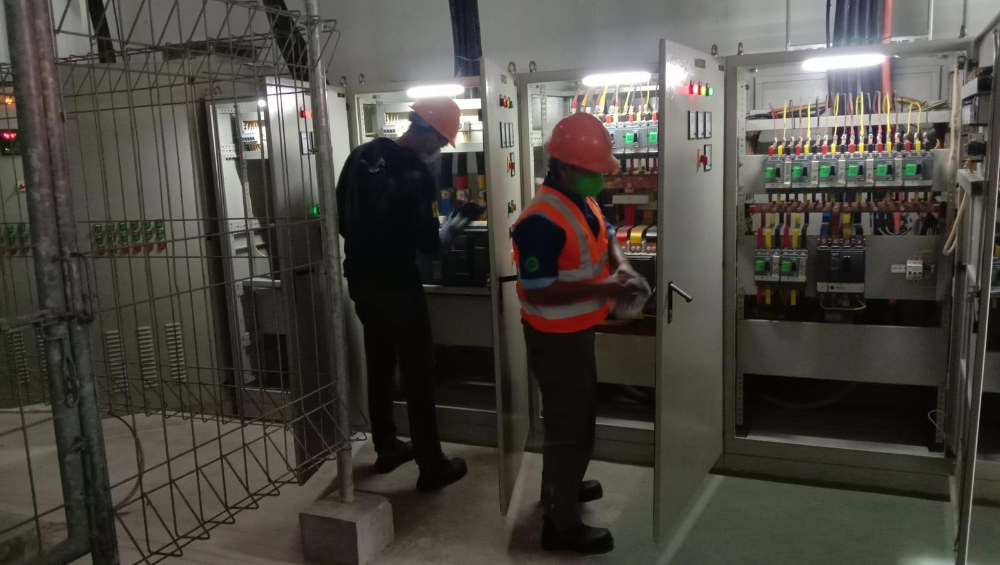

Side project
RoboCam - Automated Relay Monitoring System
Sistem pemantauan relay otomatis berbasis kamera untuk lingkungan PLN UP2D Bali.

RoboCam adalah sistem pemantauan relay otomatis berbasis kamera yang dirancang untuk menggantikan proses inspeksi manual pada panel distribusi listrik di lingkungan PLN UP2D Bali. Sistem ini memanfaatkan kecerdasan buatan untuk mendeteksi status indikator LED pada relay MiCOM Schneider Electric secara real time — tanpa keterlibatan operator selama proses berlangsung.
Tantangan utama dalam pemantauan relay di lingkungan industri kelistrikan adalah skalabilitas inspeksi. Sebuah Gardu Induk dapat memiliki puluhan cubicle yang masing-masing memuat panel relay dengan empat indikator LED — Trip, Alarm, Warning, dan Healthy — yang semuanya harus dipantau secara berkala. Inspeksi manual tidak hanya memakan waktu, tetapi juga rentan terhadap kelalaian manusia. RoboCam menyelesaikan masalah ini dengan mengotomasi seluruh proses pemindaian menggunakan satu modul kamera yang bergerak di atas rel horizontal.
Arsitektur sistem
Sistem RoboCam terdiri dari beberapa komponen utama yang bekerja secara terpadu:
- Modul kamera pada rel horizontal: Kamera terpasang pada platform bergerak yang melintasi seluruh barisan cubicle dari atas, memungkinkan satu kamera mencakup seluruh area pemantauan tanpa perlu kamera statis di setiap cubicle.
- Jetson Orin Nano sebagai unit komputasi: Seluruh inferensi model AI, pembacaan status LED, dan pengendalian motor dijalankan langsung di perangkat edge ini — tanpa ketergantungan pada server eksternal selama operasi berlangsung.
- Pengendalian motor via PWM: Pergerakan platform dikendalikan melalui pengaturan Pulse Width Modulation (PWM) pada motor penggerak. Jetson Orin Nano mengatur kecepatan dan arah motor secara langsung untuk memposisikan kamera di atas cubicle yang dituju.
Deteksi posisi tanpa sensor tambahan
Salah satu tantangan teknis terbesar dalam sistem ini adalah menentukan posisi kamera secara akurat tanpa menggunakan sensor posisi fisik seperti LiDAR atau encoder. RoboCam mengatasi ini dengan mengadaptasi algoritma penghitungan objek yang lazim digunakan dalam sistem pemantauan lalu lintas kendaraan. Setiap kali kamera melintasi batas antara dua cubicle, sistem mencatatnya sebagai satu hitungan — sehingga posisi cubicle yang sedang dipantau dapat diidentifikasi secara akurat hanya berdasarkan jumlah transisi yang telah terjadi. Pendekatan ini menghilangkan kebutuhan akan sensor posisi tambahan sekaligus menyederhanakan arsitektur perangkat keras secara signifikan.
Pipeline deteksi AI
Inti dari kemampuan deteksi RoboCam adalah model YOLOv11 yang dilatih khusus untuk mengenali panel relay MiCOM beserta keempat indikator LED-nya. Training data dikumpulkan langsung dari Gardu Induk dalam format video, kemudian diekstraksi per frame menggunakan FFmpeg. Anotasi dilakukan menggunakan Label Studio dengan pendekatan bounding box, dan pelatihan model dilakukan di Google Colab untuk memanfaatkan akselerasi GPU.
Untuk memaksimalkan performa inferensi pada Jetson Orin Nano, model melalui proses konversi bertahap: dari format
.pt ke .onnx, kemudian ke format .engine menggunakan TensorRT.
Konversi ke TensorRT menghasilkan peningkatan kecepatan inferensi yang signifikan dibandingkan format
aslinya, menjadikan deteksi real time layak dilakukan pada perangkat edge dengan sumber daya
terbatas.
Hasil pembacaan dari setiap relay — mencakup status Trip, Alarm, Warning, Healthy, serta mode kendali remote atau local — kemudian digabungkan dengan data identifikasi cubicle berbasis penanda ArUco, melengkapi siklus pemantauan otomatis dari ujung ke ujung.